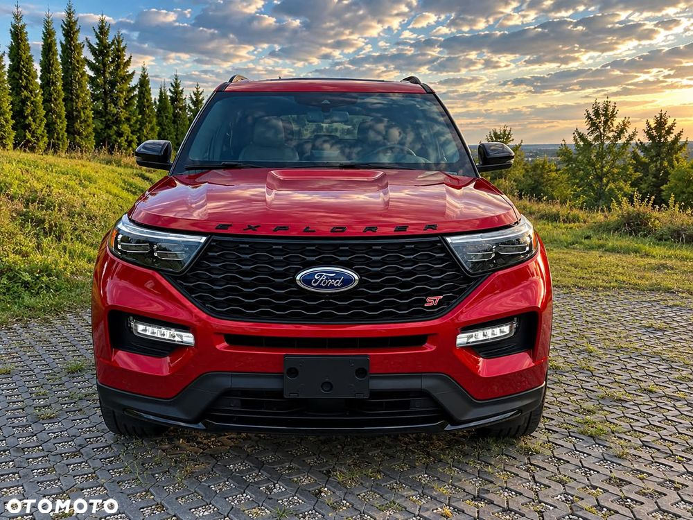
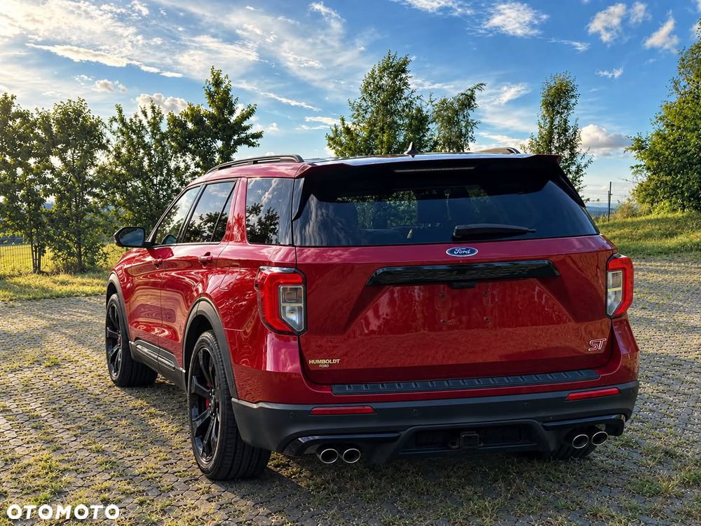
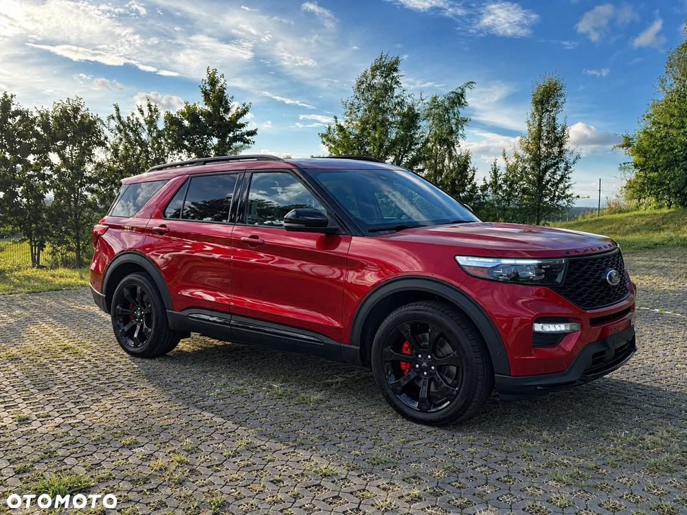
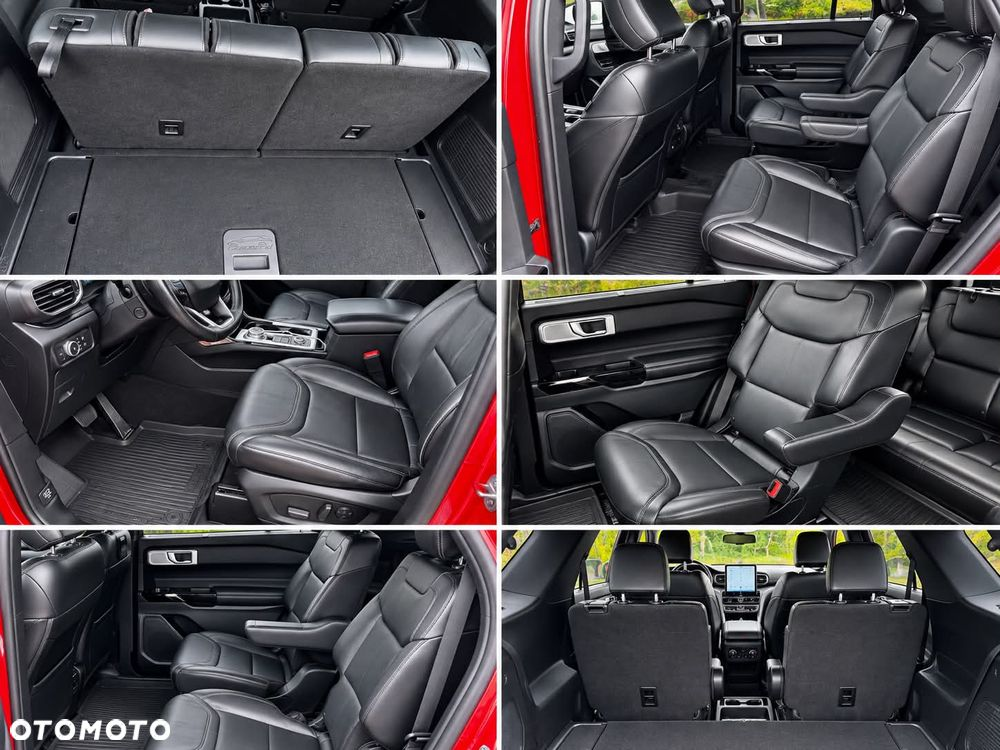
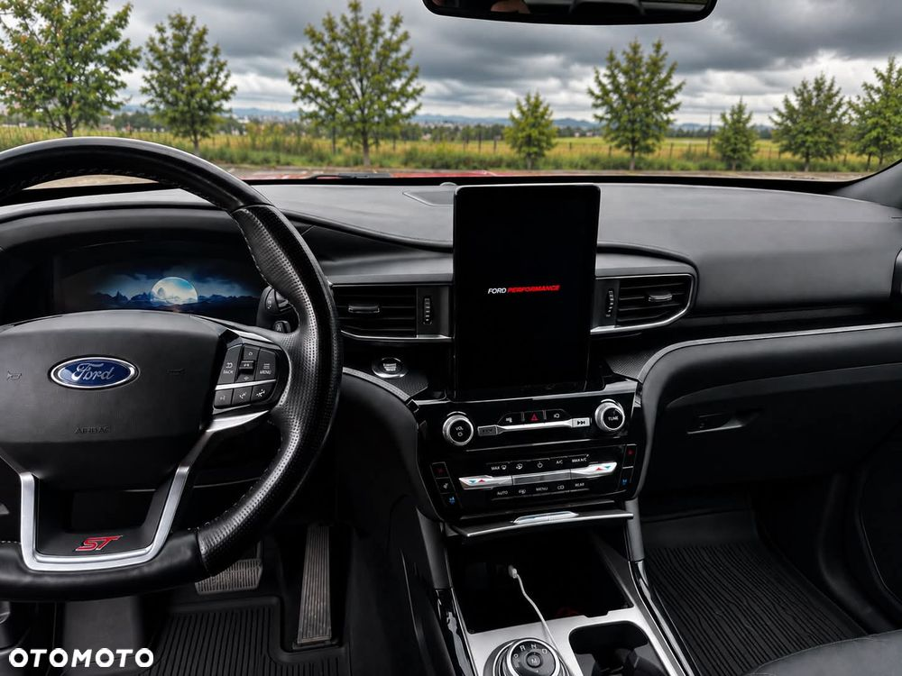
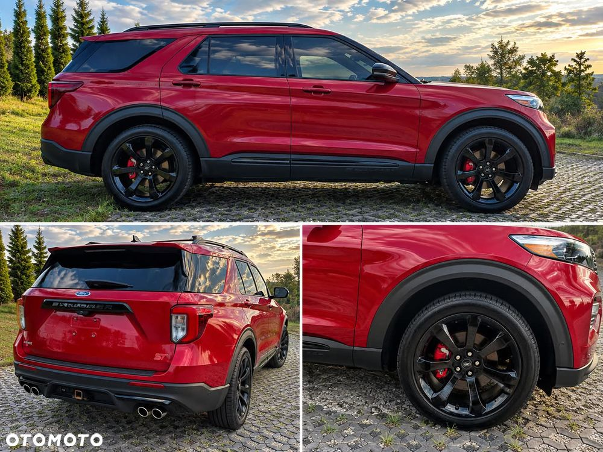
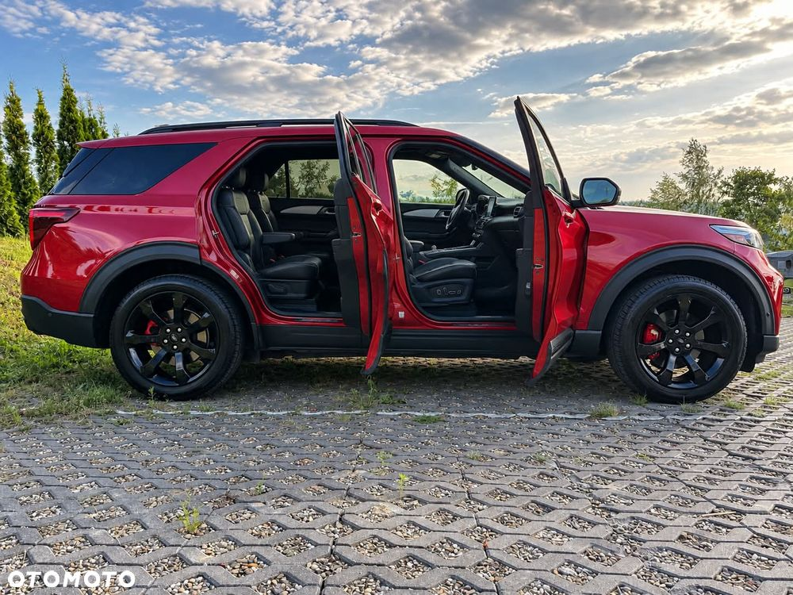
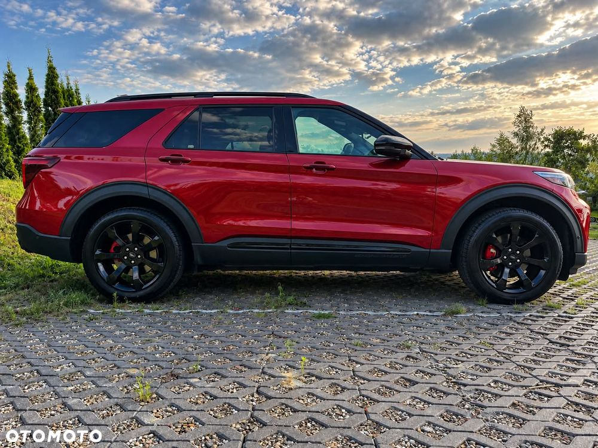

FORD EXPLORER ST 3.0 ECOBOOST AWD | 406 KM | 6 MIEJSC | ST
🔥 NIEZWYKLE MOCNY SUV, KTÓRY ROBI WRAŻENIE!
Na sprzedaż Ford Explorer ST 3.0 V6 EcoBoost AWD o mocy 406 KM – jedna z najbardziej charakterystycznych wersji Explorera. Duży, komfortowy SUV z napędem 4x4, silnikiem V6 i sportowym charakterem wersji ST.
Auto wyróżnia się rzadko spotykanym czerwonym kolorem, czarnymi dodatkami oraz sportowym wyglądem. W środku znajduje się 6 komfortowych miejsc z fotelami kapitańskimi w drugim rzędzie.
🛠️ AUTO PRZYGOTOWANE DO JAZDY
Samochód został kompleksowo przygotowany i serwisowany:
✅ nowe oryginalne elementy zawieszenia
✅ nowe opony
✅ nowe czujniki ciśnienia TPMS
✅ wymieniony olej w silniku
✅ wymieniony olej w skrzyni biegów
✅ wymienione oleje w dyferencjałach
✅ wymieniony olej w przekładni/układzie napędowym
✅ wszystkie najważniejsze prace wykonane na bieżąco
✅ na wymienione części oraz wykonane naprawy posiadam faktury
💎 WERSJA ST
To nie jest zwykły Explorer.
3.0 V6 EcoBoost + 406 KM + AWD + ST daje połączenie osiągów samochodu sportowego z przestronnością dużego SUV-a.
Na pokładzie m.in.:
* 🖤 sportowe fotele ST
* 🪑 6 miejsc / fotele kapitańskie
* 🔥 3.0 V6 EcoBoost – 406 KM
* ⚙️ automatyczna skrzynia
* 4x4 AWD
* duży ekran multimedialny
* cyfrowe zegary
* skórzana tapicerka
* sportowa kierownica ST
* czarne felgi
* czerwone zaciski hamulcowe
* przyciemniane szyby
* elektryczne fotele
* klimatyzacja dla drugiego rzędu
* bogate wyposażenie wersji ST
📄 PEŁNA HISTORIA WYKONANYCH PRAC
Dużym atutem samochodu jest udokumentowany serwis – na zakupione części i wykonane naprawy posiadam faktury, które mogę przedstawić zainteresowanemu kupującemu.
Sprzedaję samochód w całości – nie interesuje mnie sprzedaż na części.
Jeżeli szukasz dużego, mocnego i nietuzinkowego SUV-a, który wyróżnia się na drodze, Explorer ST zdecydowanie nie jest kolejnym zwykłym SUV-em.
📞 Zapraszam do kontaktu, oględzin i jazdy próbnej.
📑 Faktury oraz dokumentację wykonanych prac udostępnię na miejscu.







